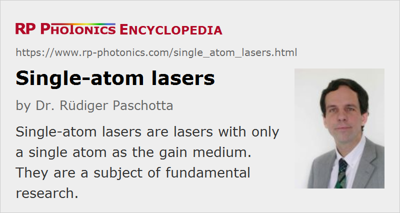

Single-atom Lasers
Definition: lasers with only a single atom as the gain medium
More general terms: lasers
German: Einatomlaser
Categories: lasers, quantum optics
How to cite the article; suggest additional literature
Author: Dr. Rüdiger Paschotta
Usually, the gain medium of a laser contains a huge number of laser-active atoms or ions. However, for various reasons it is of interest to study the behavior of a single-atom laser, where a single atom constitutes the whole gain medium. In 2003, Kimble's research group at the California Institute of Technology demonstrated the first realization of a single-atom laser (or one-atom laser) [3]. Cesium atoms were laser cooled and trapped in a magneto-optical trap (MOT) and then released in order to fall downwards. A single cesium atom was then loaded into a far-off-resonance optical trap (FORT), realized between two supermirrors which formed a high-finesse resonator serving as the laser resonator. The resonator length was actively stabilized using an auxiliary laser. The “inversion” of the cesium system (as far as this term makes sense in this regime) was also achieved with optical pumping. Laser emission occurred in the form of two Gaussian beams exiting the laser resonator at the end mirrors.
Such a one-atom laser is not just a miniaturized version of an ordinary laser. Due to the high cavity finesse and the small mode volume, this device operates in the unusual regime of strong coupling between the photons of the light field and the atomic transition. Specifically, the Rabi frequency is well above both the spontaneous emission rate and the photon decay rate of the cavity, so that the coupled system can undergo several Rabi cycles before the excitation decays. In this regime, the theoretical predictions from a full quantum description of the dynamics differ strongly from those of a semiclassical model (with classical treatment of the light field) as usually used to describe laser operation.
The investigation of such devices is of fundamental interest as it makes it possible to test certain predictions of quantum optics. Indeed, the experiments confirmed the prediction that a single-atom laser should have no laser threshold (→ thresholdless lasers), i.e. the laser emission occurs even for the smallest pump powers. Further, the laser output is not in a coherent state as for most other lasers, but consists of nonclassical light. In particular, significant photon antibunching and sub-Poissonian photon statistics could be observed with coincidence measurements, particularly at low pump rates. Much can be learned by comparing various experimental observations with predictions from laser models involving the quantized light–matter interaction. The opportunity to do detailed studies of all these effects makes such efforts worthwhile, even though it is hardly conceivable that a single-atom laser will find any practical application.
Note that there have been single-atom micromasers, where single atoms interacted with a microwave cavity. A significant difference, however, is that in this case one is usually dealing with an atomic beam where different atoms subsequently interact with the light field, even though at each time there is at most one atom in the cavity. In contrast, the single-atom laser really works with just one atom over longer times, as compared with, e.g., the inverse Rabi frequency.
Single-atom lasers should not be confused with atom lasers, which emit coherent matter waves rather than light.
Questions and Comments from Users
Here you can submit questions and comments. As far as they get accepted by the author, they will appear above this paragraph together with the author’s answer. The author will decide on acceptance based on certain criteria. Essentially, the issue must be of sufficiently broad interest.
Please do not enter personal data here; we would otherwise delete it soon. (See also our privacy declaration.) If you wish to receive personal feedback or consultancy from the author, please contact him e.g. via e-mail.
By submitting the information, you give your consent to the potential publication of your inputs on our website according to our rules. (If you later retract your consent, we will delete those inputs.) As your inputs are first reviewed by the author, they may be published with some delay.
Bibliography
| [1] | Y. Mu and C. M. Savage, “One-atom lasers”, Phys. Rev. A 46 (9), 5944 (1992), doi:10.1103/PhysRevA.46.5944 |
| [2] | C. Ginzel et al., “Quantum optical master equations: the one-atom laser”, Phys. Rev. A 48 (1), 732 (1993), doi:10.1103/PhysRevA.48.732 |
| [3] | J. McKeever et al., “Experimental realization of a one-atom laser in the regime of strong coupling”, Nature 425, 268 (2003); see also references therein |
See also: thresholdless lasers, quantum optics, nonclassical light, laser cooling
and other articles in the categories lasers, quantum optics
|  |
If you like this page, please share the link with your friends and colleagues, e.g. via social media:
These sharing buttons are implemented in a privacy-friendly way!